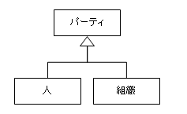
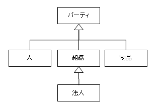
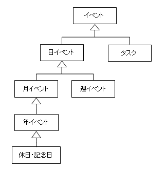

現在、大幅に作り直した新バージョンを開発中です。
開発情報
Yuimarl の開発に関わる技術情報と、内部構造について記述します。
前提知識
Yuimarl は、Java EE 7 (Java Platform, Enterprise Edition 7) を使用しています。Java EE 7 を使いこなすためには、前提として、以下の技術を使用できる必要があります。
- Java SE (Java Platform, Standard Edition)
- HTML5
- CSS
- JavaScript
- XML
- JSON
- SQL
また、Yuimarl では、jQuery という JavaScript ライブラリを使用していますので、これらについての知識も必要となります。
これらの技術については、関連書籍等で学ぶことができます。
Java EE 7
Java EE 7 について、技術を習得するために最善の方法は、次の「The Java EE 7 Tutorial」を実施することです。
http://docs.oracle.com/javaee/7/tutorial/doc/
英語ですし、量も多いのですが、これがもっとも有効な方法だと思います。
Java EE 7 の仕様を詳しく知りたい場合は、以下を参照してください。（英語）
日本語で Java EE について学ぶことができる書籍としては、『
マスタリング
JavaEE5』があります。
この本は、Java EE 5 の解説書なので、やや情報が古いのですが、Java EE の基本について全般的に学ぶには、とてもよい本です。
本書を読んでから、「The Java EE 7 Tutorial」を実施すると、理解が深まります。
Yuimarl のプロジェクト一覧
| プロジェクト | 説明 |
|---|---|
| yuimarl-lib | 共通ライブラリ。EJBとWebで共通に使用する。エンティティクラス、EJBインターフェース、ユーティリティクラスなどを保持する。 |
| yuimarl-ejb | EJBクラスを保持する。 ビルドすると、拡張子が "jar" の EJB-JARファイルが作成される。 |
| yuimarl-web | Web画面用の xhtml、JavaScript、CSS、マネージドBeanクラスなどを保持する。 ビルドすると、拡張子が "war" の Webアプリケーションリソースファイルが作成される。 |
| yuimarl-ear | EJBとWebを合わせたエンタープライズアプリケーションを保持する。 ビルドすると、拡張子が "ear" のエンタープライズアプリケーションリソースファイルが作成される。 |
| yuimarl-db-javadb-setup | Java DB のテーブル作成と初期データ投入を行う。 |
| yuimarl-db-javadb-init | Java DB の既存データ削除と初期データ投入を行う。 |
| yuimarl-db-javadb-export | Java DB のデータを XMLファイルに出力する。 |
| yuimarl-db-javadb-dtd | XMLファイルの定義情報であるDTDファイルの出力を行う。（テーブルの定義が変わった際に実行する。） |
| yuimarl-db-mysql-setup | MySQL のテーブル作成と初期データ投入を行う。 |
| yuimarl-db-mysql-init | MySQL の既存データ削除と初期データ投入を行う。 |
| yuimarl-db-mysql-export | MySQL のデータを XMLファイルに出力する。 |
| yuimarl-test-javadb | EJBの JUnit 単体テストを行う。Java DB用。 |
| yuimarl-test-mysql | EJBの JUnit 単体テストを行う。MySQL用。 |
概念モデリング
企業活動を支援する情報システムは、企業活動の対象となる様々な事物（ヒト、モノ、カネ、コトなど）を、データとして保持します。
どのようなデータをどのように保持するかということが、情報システムにとって、最も重要な要素となります。
現実の事物をデータ化するには、現実をどのように捉えるかということが問題になります。そのためのプロセスとして、抽象化（モデリング）を行います。
現実世界 → 抽象化 → データ設計
抽象化（モデリング）とは、現実世界を分析して概念の構造を抽出するプロセスであるということができます。そのための手法として確立されているのが、「オブジェクト指向」という技術です。オブジェクト指向は、概念とその関連を分析し、コンピュータ内部に、仮想現実世界を表現する技術といえます。
人・組織・物
「人」とその集合体である「組織」は、活動や契約の主体となりえるという意味で、共通の属性を持っています。マーチン・ファウラーの『アナリシスパターン』では、人と組織の上位概念として、「パーティ」(Party)
という概念を用いています。「Party」 には、仲間、関係者、当事者などの意味があります。

この図は「クラス図」といって、クラス（抽象データ型）の関係性を表現したものです。白三角が付いている先が親クラス、白三角が付いていない先が子クラスです。この図では、「パーティ」という親クラスに対し、「人」と「組織」という２つの子クラスが存在するということを表しています。
クラスの親子関係を「継承」といいます。親クラスの属性は子クラスに継承されます。たとえば、「住所」という属性は人にも組織にもありますので、パーティクラスに住所属性を保持させれば、人と組織には住所属性を持たせなくても、パーティクラスから継承されます。
パーティという概念を用いることによって、システム内部がすっきりとします。たとえば、企業にとっての「顧客」は、個人あることもあれば、法人であることもあります。顧客をパーティとすることによって、プログラムは顧客をパーティとして扱うことができます。
会社などの「法人」は「組織」の一種ですので、「法人」クラスを「組織」クラスの子クラスとして定義することができます。
さらに、建物、機械、不動産などの「物品」も、何らかの主体となりえますので、パーティの一種と捉えることができます。

Yuimarl では、人・組織・法人・物をすべてパーティとして登録し、識別番号によって管理しています。
パーティ関連
たとえば、AさんとBさんは親子である、CさんはD社の社員である、EビルディングはF社が所有している、などというように、人と人、人と組織、組織と組織、組織と物など、主体と主体は関係性を持っていることがあります。このパーティ間の関係性を保持するために、Yuimarl
では、「パーティ関連」クラスを定義しています。
次の図は、CさんとD社の間に雇用関係というパーティ関連があるということを表現したオブジェクト図です。
人も法人もパーティなので、クラス図にすると次のようになります。
Yuimarl
では、「パーティ関連」クラスに、「パーティ1」と「パーティ2」という２つの属性を持たせることによって、２者間の関連情報を保持しています。すべてのパーティ関連は、識別番号によって管理されます。
イベント
スケジュール管理機能では、過去から未来までの出来事を管理します。その出来事を「イベント」クラスとして管理します。イベントには、１回のみのイベントと、複数回繰り返されるイベントがあります。繰り返されるイベントには、「日イベント」、「週イベント」、「月イベント」、「年イベント」、「休日・記念日」があります。
プロジェクト管理機能で管理されるイベントは、「タスク」クラスとします。
イベントのクラスは、次のような継承関係となります。

全体クラス図
現在の Yuimarl のクラス図は、次のようになっています。
クラス図
（クリックしてご覧ください。）
概念クラスは、プログラミング工程において、エンティティクラスとして実装されます。Yuimarl のエンティティクラスは、yuimarl-lib
プロジェクトの src/main/java/jp/yuimarl/entity/ に存在します。
{kind=link}